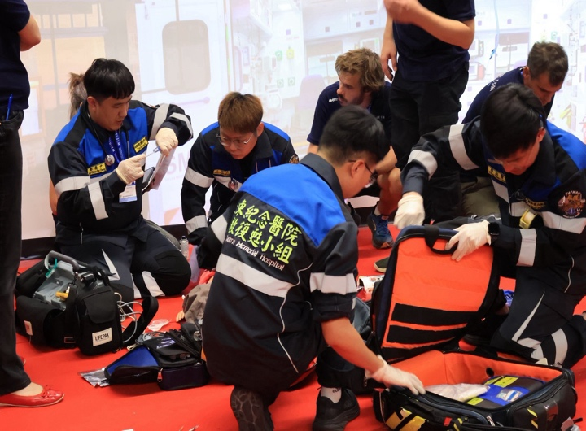
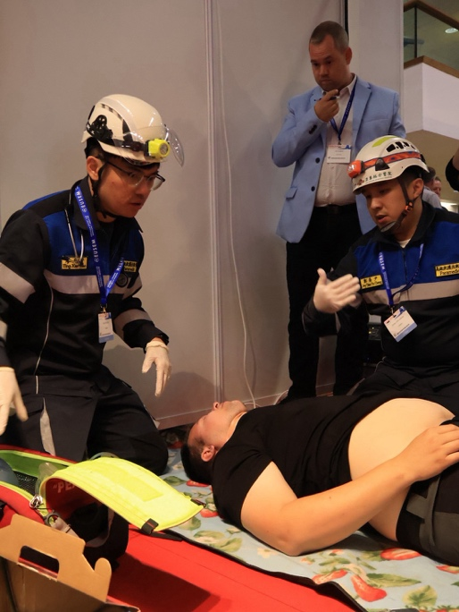
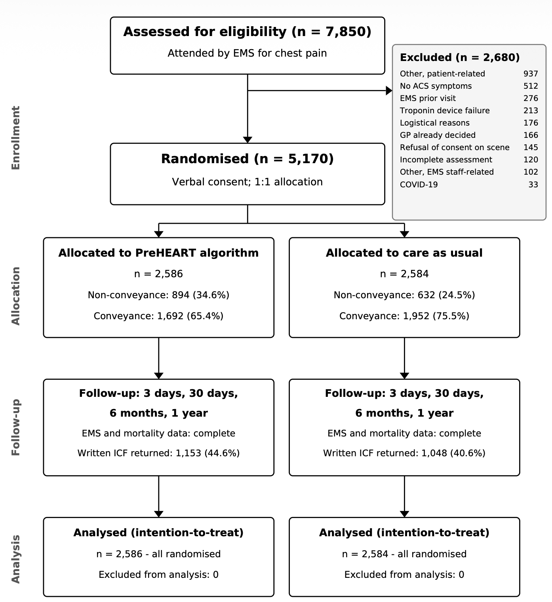
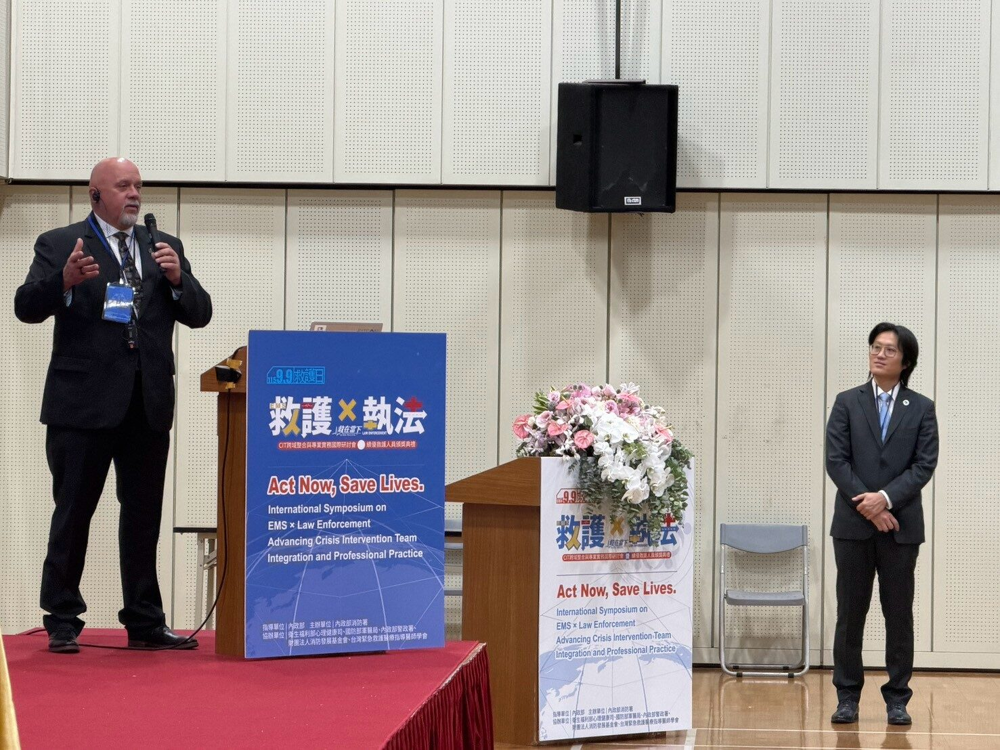
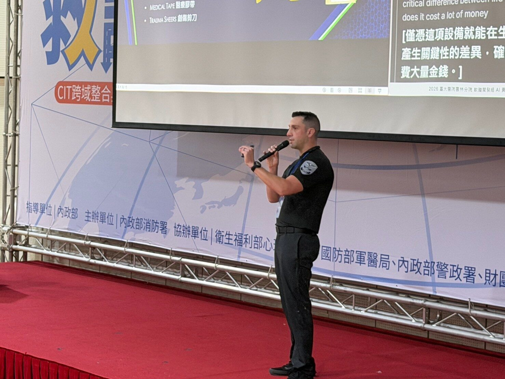
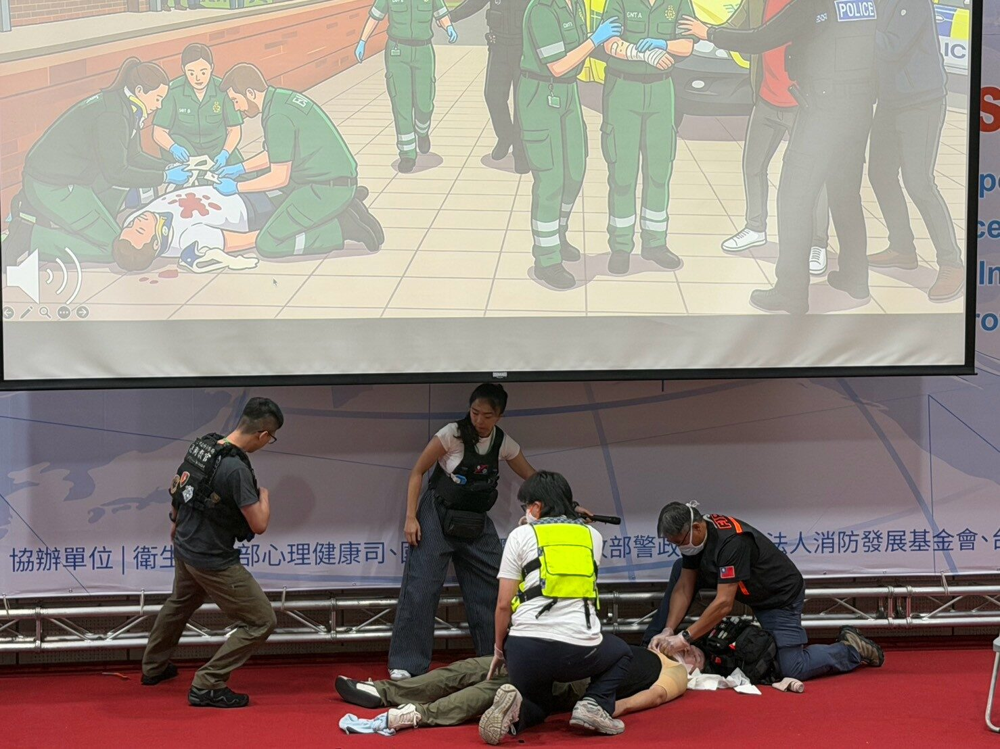
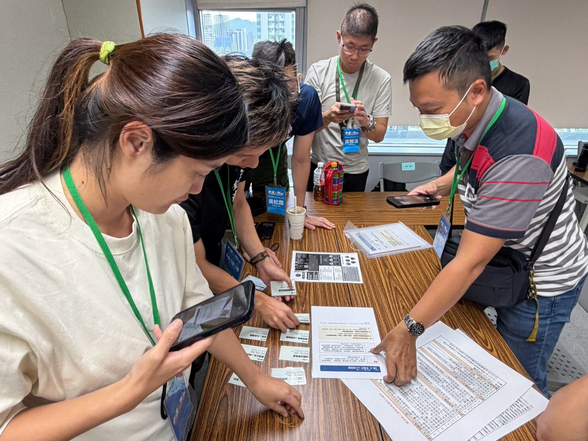
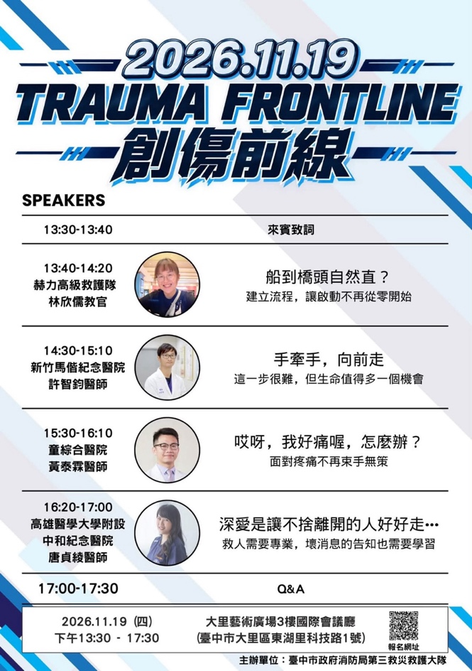
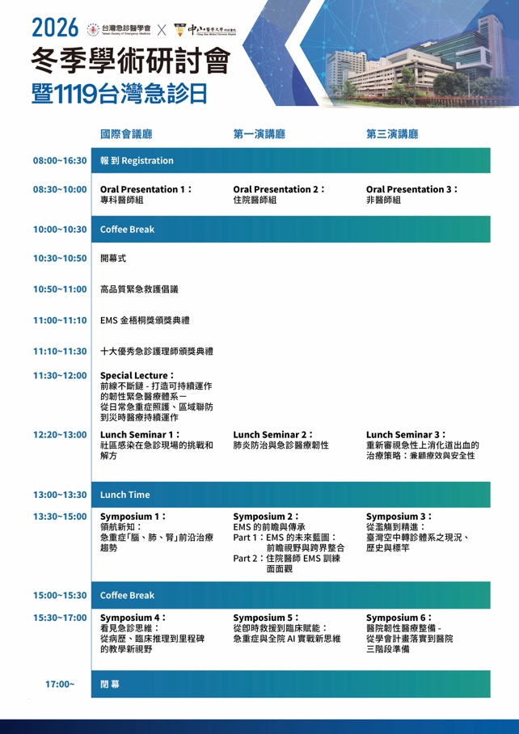

2026 年 10 月刊
台灣緊急醫療救護通訊
台灣之光｜Team Taiwan：比獎盃更值得帶回台灣的事，2026 EUSEM團隊參賽心得
團隊成員：何驊醫師、鄭喬尹博士、林子傑護理師、曾于珊護理師，新北市政府消防局王濬杰隊員、廖庭賢隊員
登上國際舞台
2026年9月，我們亞東紀念醫院與新北市政府消防局的一群夥伴，前往巴黎參加歐洲急診醫學年會（EUSEM）模擬競賽，並獲得院前組冠軍。但獎盃不是唯一目的。我們希望藉由競賽走出熟悉的作業模式，與各國救護人員交流，理解北美與歐陸EMS體系的差異。例如北美常見以Paramedic為核心的現場照護模式，部分歐陸國家則有醫師參與院前醫療；制度各有背景，值得學習的是各隊如何因地制宜地做出決策。

預判與團隊協作
這次比賽最深刻的提醒，是救護不能只解決眼前的問題，更要預想到病人接下來可能發生什麼事。當呼吸、循環或意識異常，除了當下處置，還要思考惡化徵兆、備用設備與下一步計畫。若只顧完成一項技術，忽略病況的連續變化，便容易在危機出現時失去主動。好的救護並非反應最快，而是能及早預判、做好準備，並適時調整策略。
除了預判，關鍵時刻的決斷力同樣重要。以嚴重過敏性休克為例，當病人施打腎上腺素（Epinephrine）後仍未改善，團隊不能只停留在「已經給藥」，而應立即評估是否需要重複給藥、積極輸液，甚至進一步處理難治性過敏性休克。若病人出現呼吸道水腫，更要提前規劃呼吸道處置；萬一氣管插管失敗，是否已準備好聲門上呼吸道裝置？若連基本通氣與氧合都無法維持，是否能及時辨識危機並啟動緊急外科呼吸道救援？這次競賽讓我們深刻體會，優秀的救護團隊不能只有Plan A，更要隨時準備Plan B，甚至Plan C。真正的臨床能力，不只是知道眼前該做什麼，而是能預判下一個危機，並在關鍵時刻果斷決策、團隊協作，為病人爭取生存機會。
另一個核心收穫，是團隊資源管理（Team Resource Management, TRM）。一支成熟的隊伍，不是由幾位技術高超的人各自完成任務，而是全員都清楚眼前病況及下一步。領導者清楚分工，隊員主動回報變化，指令透過閉環溝通得到確認；當有人發現風險，即使不是指揮者，也能勇敢提出。共享情境認知、相互補位、信任與溝通，這些看不見的「軟實力」，才是把個人技術轉化成團隊戰力的關鍵。


比勝利更重要
我們認為，救護競賽不該只是各隊較量速度、技術與名次的角力場，更應是檢視制度、交流思維與發掘盲點的學習場。對台灣EMS而言，未來訓練除了技能操作，也應重視病況預判、團隊溝通與決策；讓消防、醫師與護理人員一起進行情境演練，並透過賽後或演練後檢討，討論哪些決策可以更早、哪些資訊沒有被聽見、哪些環節需要制度支持。把經驗帶回日常訓練，國際交流才不會止於一場比賽或一張得獎照片。
最後，想對台灣EMS的學弟妹說：把基本功練穩，也要練習思考、溝通與合作；保持好奇，勇於提問，不要害怕站上國際舞台。出國參賽不是為了證明我們比別人強，而是去看見不同的可能，再把好的觀念帶回自己的團隊。比獎盃更有價值的，是讓台灣每一趟救護出勤，都因這些學習而更安全、更成熟。

新知分享｜胸痛一定要送急診嗎？PreHEART 3開啟院前精準分流新思維
論文背景與研究方法
急性胸痛是到院前緊急醫療救護系統（EMS）常見的求救主訴，但多數病患最終並未確診急性冠心症（ACS）。現行院前評估主要依賴病史、生命徵象、心電圖（ECG）及救護人員臨床判斷。由於漏診ACS可能造成嚴重後果，救護人員通常傾向將病患送醫，增加急診醫療負荷；另一方面，女性ACS患者也可能因症狀表現差異而面臨辨識不足的風險。
荷蘭研究團隊因此進行PreHEART 3隨機對照試驗，評估結構化胸痛風險評分能否在不增加嚴重不良事件的前提下，改善院前分流效率。本研究共納入5,170名成年胸痛病患，隨機分配至PreHEART組（2,586人）與常規照護組（2,584人），並由不知分組資訊的評估者判定部分臨床結果。
PreHEART評分包含病史、ECG、年齡、性別相關心血管危險因子及院前床邊快速檢驗肌鈣蛋白I（POC Troponin I），總分0–10分。依風險分為低風險（0–3分，建議不後送並安排基層醫療追蹤）、中風險（4–7分，送往最近急診）及高風險（8–10分，直接送往具心導管介入能力的醫院）。研究排除持續性STEMI、血流動力學不穩定，以及無法於24小時內獲得家庭醫師追蹤等病患。
本研究主要評估PreHEART分流策略是否會增加病患三天內發生嚴重不良事件的風險，包括死亡、需心血管處置的ACS病患被送往不適當的醫院，以及住院時間等，藉此了解減少後送是否會影響病患安全。

三大主題核心研究發現
1. 減少後送未增加明顯風險，但安全性仍待確認
研究結果顯示，採用PreHEART分流策略的病患，在三天內發生嚴重不良事件的整體表現與常規照護相近，符合研究預先設定的安全性標準。全體1,526名未後送病患中，兩組均無三天內死亡事件；30天全因死亡率亦相近（1.0% vs 1.1%）。
然而，當研究進一步只分析確實依照分組及建議流程接受處置的病患時，結果未能再次確認相同的安全性標準。這可能與部分低風險病患仍選擇送醫，以及介入組實際遵循評分建議的比例較低有關。因此，雖然研究支持PreHEART具有減少後送的潛力，但尚不足以認定此策略在所有EMS體系中都同樣安全。
2. 提高現場不後送率，減少急診資源使用
PreHEART組現場不後送率由常規照護的24.5%提升至34.6%（RR 1.41，95% CI 1.30–1.54），絕對增加約10個百分點。30天內急診就醫比例亦由76.9%降至67.6%（RR 0.88，p<0.001）。
醫療經濟分析顯示，PreHEART組每位病患平均30天醫療支出差異為−345歐元（95% CI −535至−156），而生活品質評分未呈現統計顯著差異。結果顯示，結構化院前風險評估有機會減少不必要後送與急診資源消耗，但其安全性仍須連同其他分析結果審慎解讀。
3. 女性ACS辨識改善，惟性別差異仍待驗證
預先設定的性別分層分析發現，PreHEART組女性ACS確診率高於常規照護組（17.6% vs 11.9%；RR 1.48，95% CI 1.05–2.07），接受冠狀動脈造影的比例亦較高（18.6% vs 11.2%；RR 1.66，95% CI 1.18–2.33）。男性ACS病患直接送往PCI醫院的比例則由52.4%增加至66.4%（RR 1.27，p=0.010）。
不過，進一步考量多項統計比較後，尚無足夠證據確認PreHEART對女性的效果確實優於男性。因此，女性ACS辨識改善是值得關注的發現，但尚不能認定這套評分已消除性別診療差異，或改善女性患者的長期預後。
給三大族群的簡明實務建議與須知
消防救護人員：
標準化風險評估有助於減少單憑症狀或個人經驗進行分流的差異。然而，研究中的不後送策略建立於特定排除條件、設備訓練及完善的後續追蹤制度，不能僅憑低分就逕行決定病患留置現場。
醫療指導醫師：
可將院前Troponin與結構化胸痛評分列為未來EMS研究及試辦方向，優先評估檢驗準確性、救護人員操作能力、醫療責任及追蹤機制。台灣與荷蘭EMS體系不同，正式導入前仍需本土驗證及成本效益分析。
急診醫師：
PreHEART顯示院前ECG、風險評分與Troponin整合具有改善胸痛分流的潛力。急診端可思考如何與EMS建立一致的胸痛評估及轉診機制，但仍須留意發病早期Troponin陰性不能單獨排除ACS。
結論與未來展望
PreHEART 3試驗提供了大規模隨機對照證據，顯示結合院前Troponin的結構化胸痛分流，在主要分析中符合研究預設的安全性標準，並可增加現場不後送比例、降低急診就醫與醫療支出。然而，另一項針對實際遵循分流流程病患的分析未能確認相同結果，女性ACS辨識改善也仍需進一步驗證。此外，研究使用非高敏感度（contemporary）i-STAT Troponin I，且高度依賴荷蘭成熟的基層醫療追蹤制度，其結果尚不能直接套用至其他EMS系統。對台灣而言，這項研究的重要啟示並非立即推動胸痛病患不送醫，而是透過客觀風險評估、院前檢驗與醫療指導制度的整合，探索更安全且有效率的胸痛救護模式。
國際交流｜救護 × 執法，救在當下：CIT跨域合作與危機介入國際研討會紀實
跨域合作的起點
一通報案電話，可能同時牽動派遣、消防、警察、急診與社區心理衛生服務。當民眾身處精神危機，第一線人員不只要判斷現場風險與送醫必要性，也必須思考後續由誰接手。這些環節在台灣分屬不同機關與法規，若缺少事前溝通，危機現場便容易出現資訊與責任的斷點。危機介入小組（Crisis Intervention Team, CIT）起源於1988年美國孟菲斯，其核心並非單一技巧，而是讓執法、救護、醫療及社區資源建立共同語言與轉介機制。
2026年9月9日至10日，內政部消防署於新店舉辦「【救護Ｘ執法】救在當下：CIT跨域整合與專業實務國際研討會」，邀請國內消防、警政、醫療、心理衛生與軍醫系統，以及美國CIT專家交流。研討會首先回顧台灣精神衛生法修正後的緊急精神醫療處置程序，以及本土CIT訓練由社區精神病人護送演練，逐步發展為教案、師資培訓與跨機關共訓的歷程。與會者也指出，各地課程標準不一、師資集中及共同回應模式尚未普及，仍是制度推動的挑戰。
國際經驗與實務啟發
CIT International理事長Roy Eckerdt強調，CIT不等於一門40小時課程。訓練只是起點，還需要穩定的轉介窗口、願意接案的醫療機構、持續資料回報與長期維運。美國各州標準與訓練品質不一的經驗，也提醒台灣應及早思考跨機關協作與成效追蹤。


危機應處從報案電話就已開始。CIT International理事Matthew Moody指出，派遣員往往是第一個接觸個案的CIT成員，卻未必獲得足夠訓練；如何詢問風險、安撫報案人及提醒現場人員，直接影響後續安全。Roy Eckerdt另介紹壓力下的自我調節與「積極旁觀者」概念，鼓勵同仁在夥伴情緒升高時及時、尊重地介入。
現場溝通也必須考慮神經多樣性。自閉症光譜、注意力不足過動或感覺統合困難者，可能因聲光刺激、碰觸或複雜指令而出現不同反應，不能一概視為敵意。當言語降階無效且出現暴力或武器風險，戰術緊急醫療支援（Tactical EMS, TEMS）則強調依現場危險區域判斷醫療介入方式。此外，西雅圖警察局分享具EMT訓練的執法人員（LE-EMT）及執法傷患救護（Law Enforcement Casualty Care, LECC）經驗；普吉特灣區域消防局介紹FD Cares，由護理師與社工接手頻繁報案者的家訪、資源轉介與長期個案管理。這些案例共同指出：危機處理不只在於當下成功送醫，更在於讓合適的人接續提供服務。
跨職類的實戰演練
第二天下午的工作坊，讓消防、警察、醫療與心理衛生背景的學員混合分組，120位學員輪流參與三站、每站60分鐘的情境訓練。這項設計刻意打破各單位平時各自受訓的習慣，讓學員直接理解彼此的職責與限制。第一站練習箱式呼吸、壓力調節與積極旁觀者介入；第二站以暴力事件模擬警消在不安全環境下的現場觀察、止血、搬運與交接；第三站則透過桌上個案與卡牌，判斷精神衛生法相關要件，以及送醫之外的社區轉介選項。


在橫向合作演練中，部分高風險個案並不符合特定法定送醫要件，學員必須討論如何通知主管機關並連結醫療與社區支持。對第一線人員而言，這不只是記住法條，更是學習在無法單靠自身單位完成任務時，如何找到下一個可接手的夥伴。
讓合作走出會場
研討會回收90份匿名問卷，整體滿意度平均4.66分（滿分5分），96%填答者給予4分以上評價。三場工作坊的評分構面平均4.78分，其中「跨職類混合分組的價值」達4.83分。學員回饋反覆提到：與其他職類坐在同一桌討論，才真正理解對方在法規、人力與資源上的限制。閉幕時，主辦團隊提出三項可以立即採取的行動：交換一位跨機關夥伴的聯絡方式；下一次演練邀請其他單位一起參與；把實際處理的案例帶回團隊討論。這些行動不必等待大型計畫或額外經費，卻可能成為在地合作的起點。
會後意願調查顯示，69人願加入跨域交流社群、50人願協助在地辦訓，亦有學員希望參與師資培訓或提供案例。未來台灣CIT若要從單次研討會走向常態制度，仍需推動基礎課程標準化、跨機關共同演練、轉介網絡與資料回饋。真正值得帶回工作現場的，不只是危機降階技巧，而是能讓消防、警政、醫療與心理衛生系統持續合作的關係。
近期活動
2026 TRAUMA FRONTLINE創傷前線研討會
活動時間：115年11月19日（星期四）13:30～17:30
活動地點：大里藝術廣場3樓國際會議廳（臺中市大里區東湖里科技路1號）
主辦單位：臺中市政府消防局第三救災救護大隊
活動主題：創傷救護、到院前處置、疼痛管理及重大傷病溝通
相關連結：報名網址請掃描活動海報右下方QR Code
本次研討會以「創傷前線」為主題，邀集消防救護與急診醫療專家，分享創傷救護流程建立、到院前截肢處置、急性疼痛管理及重大傷病告知等實務經驗，透過跨領域交流，提升第一線救護人員的臨床應變能力與照護品質。

2026冬季學術研討會暨1119台灣急診日
活動時間：115年11月29日（星期日）09:00～17:00
活動地點：中山醫學大學誠愛樓9樓（臺中市南區建國北路一段110號）
主辦單位：台灣急診醫學會、中山醫學大學附設醫院
活動主題：EMS金梧桐獎頒獎典禮、急重症醫療、醫療韌性及人工智慧臨床應用
報名截止：115年11月15日
相關連結：https://www.sem.org.tw/Activity/A/Details/33128
本次研討會聚焦急重症醫療與院前救護發展，涵蓋急重症前沿治療、EMS跨領域整合、空中轉診、人工智慧臨床應用及醫院韌性等議題，並透過研究發表與專題交流，促進急診醫療專業知識分享及臨床實務創新。

第五屆第二次會員大會暨學術研討會－醫在現場，救向未來
活動時間：115年11月29日（星期日）12:00～17:10
活動地點：中山醫學大學誠愛樓10樓多功能教室7（臺中市南區建國北路一段110號）
主辦單位：台灣緊急救護醫療指導醫師學會（TAEMSP）、中山醫學大學附設醫院急診部
活動主題：院前緊急醫療、國際救護教育、醫療指導、創新救護科技與EMS安全文化
相關連結：https://forms.gle/J2hJSzpabx4aKyTc8
本次研討會以「醫在現場，救向未來」為主題，邀集國內外專家分享日本兒童到院前救護訓練、Doctor Car醫療指導、院前ECMO與備血、無人機AED應用及EMS安全文化，促進院前緊急醫療創新與專業交流。